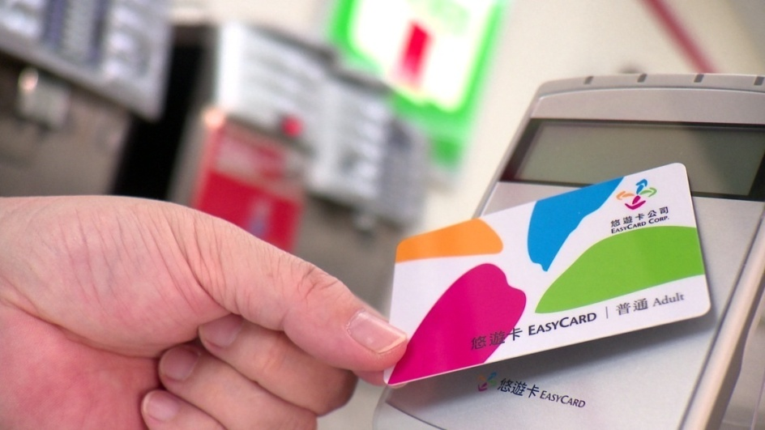
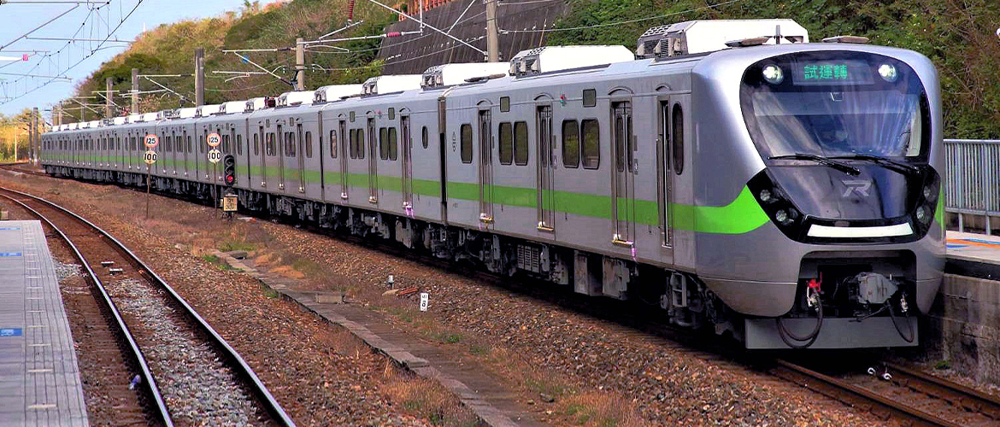
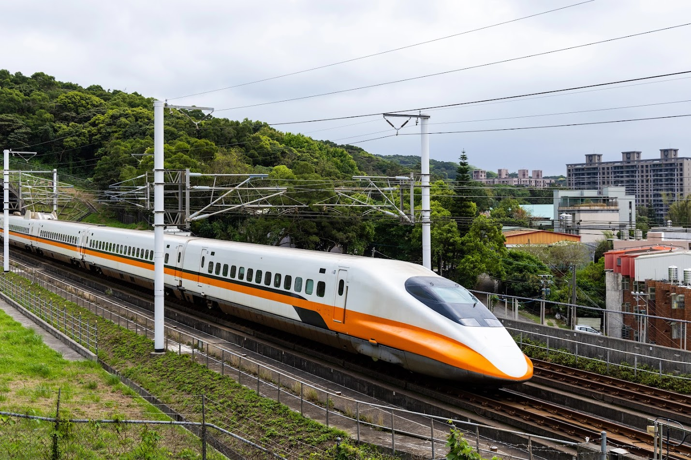
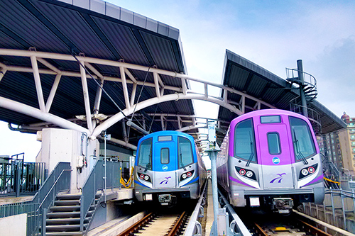
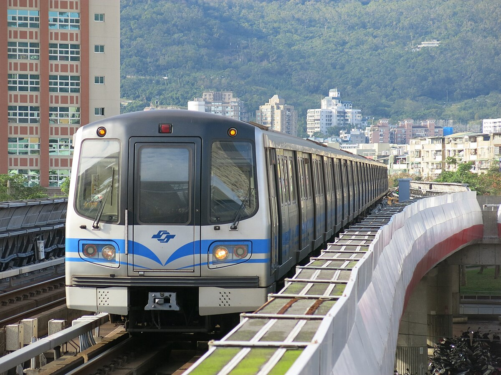
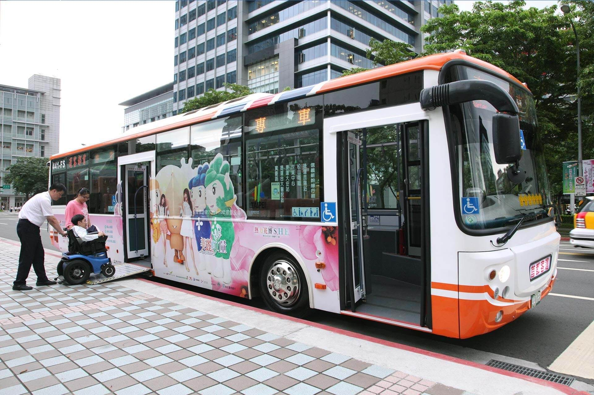
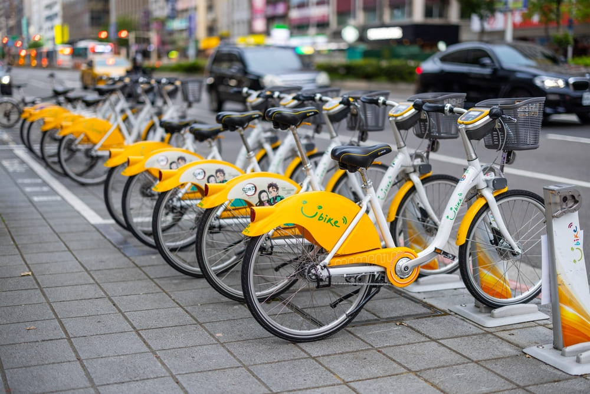
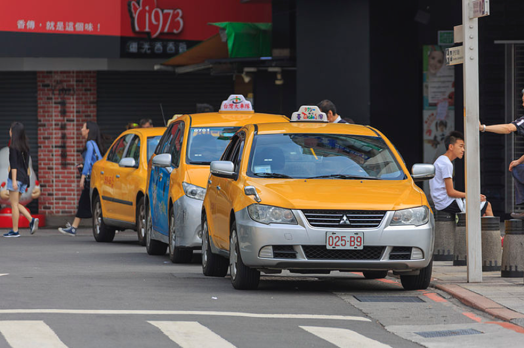

Getting Around Taiwan
Taiwan's transportation system is one of the most convenient and visitor-friendly in Asia. Whether you're traveling between cities or heading to a local market, Taiwan offers many fast, reliable, and affordable options. Once you understand how each mode connects, you can easily mix and match TRA, High-Speed Rail, MRT, buses, YouBike, and taxis.
EasyCard/iPass - Your Transport Super Card
EasyCard and iPass are the most essential items for traveling around Taiwan. They offer seamless access to almost all public transportation systems.

Where You Can Use EasyCard/iPass
- MRT systems
- City buses
- YouBike
- TRA (for local and short-distance rides)
- Some taxis and convenience stores
Where to Buy
- MRT stations
- Convenience stores (7-Eleven, FamilyMart)
- Taoyuan Airport counters
Pricing
- Card deposit: around NTD $100
- Load any amount as needed
- Cheaper fares than cash on many routes
Taiwan Railway (TRA)
TRA connects the entire island, covering big cities and small towns, especially along the scenic east coast.

How to Use TRA
- Use EasyCard for short or mid-distance travel
- Book tickets in advance for long-distance or express trains
- TRA Tourist Pass (TR Pass) offers unlimited rides
- Day/Tour Pass allows unlimited rides within specific zones on the validation day
How to Buy Tickets
- Purchase at stations (counter or machine)
- Buy online and collect at stations, post offices, or convenience stores
- Convenience store pickup requires entering booking info + passport/ID number
Online Booking
Website: https://tip.railway.gov.tw/tra-tip-web/tip?lang=EN_US
Important Notes
- Bookings open 28 days before departure
- Pre-booking is essential for busy days
- Pay within 2 days after booking
- Same-day bookings must be paid at least 30 minutes before departure
THSR - Taiwan High-Speed Rail
THSR runs along the west coast, connecting Taipei to Kaohsiung in 1.5-2 hours with speeds up to 300 km/h.

Types of THSR Tickets
- Business Car: Reserved, spacious seating
- Standard Car: Reserved seating
- Non-Reserved Car: Choose any available seat in designated cars
How to Ride THSR
- Buy tickets online (https://en.thsrc.com.tw/), at stations, or via travel platforms
- Discounts available: Early Bird (10-35%), student fares, tourist passes
- Enter by inserting ticket at the gate
- HSR stations are often outside city centers—plan follow-up travel
MRT (Metro/Subway)
Taipei, New Taipei, Taoyuan, and Kaohsiung operate clean, efficient MRT systems with English-friendly navigation.


How to Use MRT
- Tap EasyCard when entering and exiting
- Ticket machines accept coins; counters sell single-journey tokens
- Operating hours typically 6:00 AM - midnight
- No food or drink allowed beyond the gates
MRT Websites
Buses in Taiwan
Buses cover cities, rural towns, mountains, and attractions not easily reached by TRA, MRT, or HSR.

How to Ride Buses
- Tap EasyCard when boarding (and sometimes when exiting)
- Google Maps works well for routes
- Typical fare: NT$15-30 for city rides
- Track schedules using Bus+ or Bus Taiwan apps
YouBike
YouBike is ideal for sightseeing riversides, exploring neighborhoods, or traveling short distances.

How to Rent a YouBike
- Register EasyCard/iPass in the YouBike app (passport + local phone number may be required)
- Tap your card at the dock to rent
- Return to any dock and tap your card to complete payment
Pricing
- The first 30 minutes often free
- Rates increase with time used
Taxis
Taxis are convenient for late-night travel, luggage, and places not covered well by public transit.

How Taxis Work
- Fares based on distance + time using meters
- Extra charges apply late at night or on highways
- Apps (Uber, LINE Taxi, Taiwan Taxi, yoxi) show estimated fares
How to Catch a Taxi
- Hail one on the street or at taxi stands
- Yellow cars with a red light on are available
- Cash always accepted; some accept cards/mobile payments
Safety & Etiquette
- Use official taxis or reputable apps
- Wear seatbelts and secure belongings
- Ask for receipts before the ride